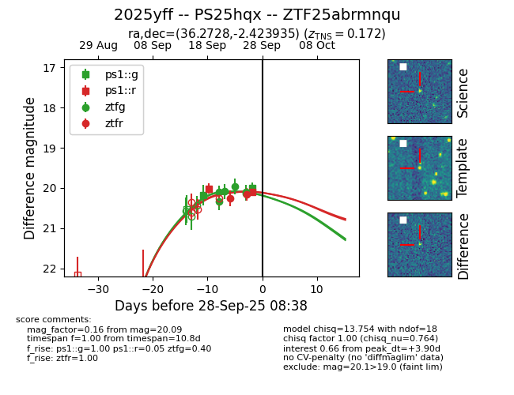
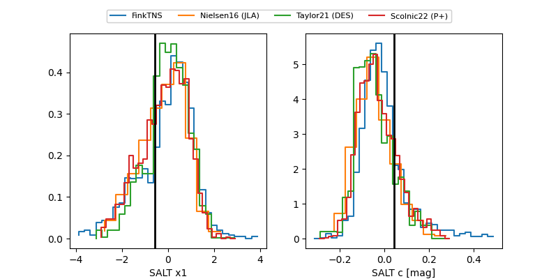

FINK: ZTF25abrmnqu
Lasair: ZTF25abrmnqu
ALeRCE: ZTF25abrmnqu
TNS: 2025yff
YSE: 2025yff
ZTF25abrmnqu (ztf,fink)
2025yff (tns,yse)
PS25hqx (panstarrs)
equatorial (ra, dec) = (36.2728,-2.42393)
galactic (l, b) = (169.1538,-56.64320)


last ps1::g=20.00, ps1::r=20.09, ztfg=20.14, ztfr=20.15
2 ps1::g, 2 ps1::r, 6 ztfg, 2 ztfr detections